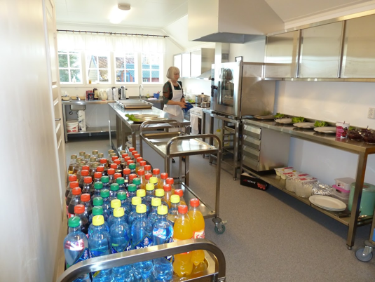
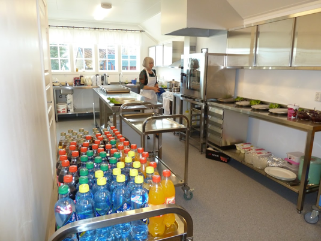

Ask menighetshus ble bygget i 1939, men er blitt påbygget og rehabilitert flere ganger. Resultatet er blitt et trivelig og tjenlig hus som det er ganske populært å leie til ulike arrangementer. Kjøkkenet ble nytt i 2014 og må sies å være et «storkjøkken» i passelig format for ca. 100 gjester. Salen har også plass til ca. 100 gjester, men rundt 60 er optimalt. Se bildene under! Huset holder alt nødvendig dekketøy, mens duker kan leies. Vi har et godt høytaleranlegg og en ypperlig projektor. Tar en med seg en bærbar pc eller minnepinne, er det utstyr for enkel påkobling. Toalettfasilitetene er nye, også for funksjonshemmede. Huset blir mye brukt til minnesamvær, dåps- og konfirmasjons-middager. Bryllupsfest har vært arrangert flere ganger. Også runde dager feires i huset. Vi understreker at det ikke er tillatt med alkoholservering.
 
